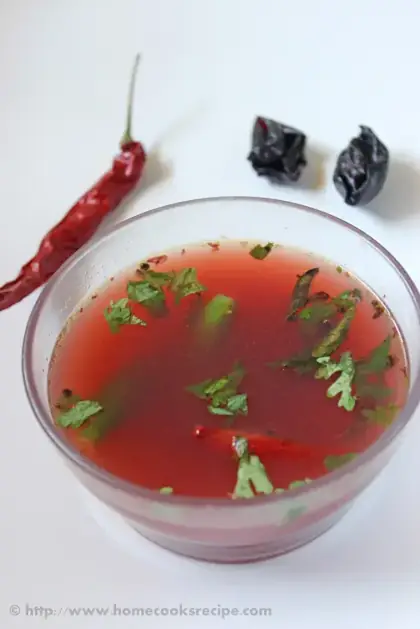

Main course · Popular in South India and West coast and Deccan
Kokum saaru
Kokum saaru is made with wild kokum, a favourite in South India and West coast and Deccan.

How do you make kokum saaru?
Thin, tangy kokum rasam tempered with ghee and cumin.
Wild ingredients
- Kokum (Garcinia indica): in season March to May
Watch the recipe

Video: MyWay YourKitchen on YouTube